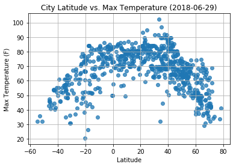

Max Temperature

There is a strong correlation between latitude and the maximum temperatures recorded.
Temperatures increase the closer city is to the Equator (zero degrees latitude). However, the maximum temperatures observed were between 20 and 40 degrees north. This observation is to be expected, as when the data was collected it was the summer season in the Northern Hemisphere, and the Sahara, Gobi and Guadalajara desers are located between 20 and 40 degrees north.